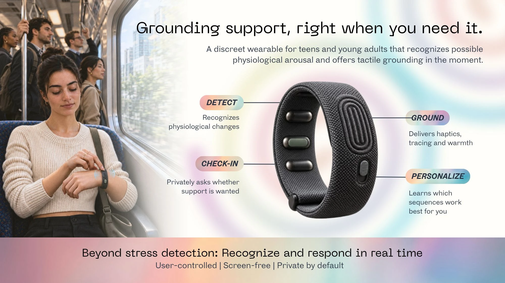
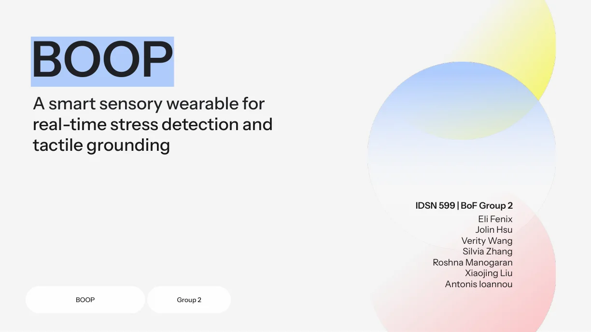

FEATURED CASE STUDY / FALL 2026
BOOP
A little grounding.
Right when it counts.

THE OPPORTUNITY
Stress happens
in the moment.
Support should, too.
BOOP explores a simple question: how might a wearable help someone respond to a stressful moment, without asking them to look at another screen?
Our concept is a discreet sensory wearable for young people ages 13–29. It combines signs of physiological arousal with an optional tactile check-in and user-controlled grounding.
The product direction centers on a complete experience: recognize a possible signal, ask whether support is wanted, and offer something tangible to focus on.
MY CONTRIBUTION
From an idea to
a product direction.
This was a collaborative class project. My ownership focused on the product concept and the business decisions that gave it direction.
Product idea
Developed the core idea of pairing physiological sensing with discreet, screen-free tactile grounding.
Management & strategy
Defined the vision, positioning and strategic priorities: a differentiated experience, user trust and validation before scale.
Market sizing
Framed the TAM, SAM and SOM to connect the target audience with a potential commercial opportunity.
Use of funds
Structured a proposed $500K initial raise around development, operations and launch, with milestones through month nine.
The research, visuals, competitive analysis and financial model shown throughout this case study are shared group materials. They are included as context, not claimed as solely my work.
THE PROPOSED EXPERIENCE
Sense. Ask. Ground.
The wearer stays in control. Support begins with an invitation, and can be started or stopped by the user.
PROPOSED SENSING
Notice the signal.
Leave room for context.
HRV, electrodermal activity and skin temperature may indicate physiological arousal. The concept uses these as signals for an optional check-in, not a diagnosis.
An interactive explanation of the concept, not a functioning device simulation.
RESEARCH INFORMING THE DIRECTION · GROUP FINDINGS
“Prefer quiet, screen-free support between activities.”
Ella C · USC juniorDesign implication: keep it discreet.
“I’d want to be able to trigger it myself.”
Nathan C · USC juniorDesign implication: make support optional.
“My first question is who controls the prompt.”
Christina G · CounsellorDesign implication: prioritize user control.
PRODUCT STRATEGY · MY OWNERSHIP
Build trust before
building scale.
Move from monitoring stress to empowering a response.
Connect detection with action.
Bring sensing, consent-based check-ins and personalized tactile grounding into one coherent experience.
Make control part of the product.
Prioritize discretion, comfort and on-device privacy. Let users choose when support begins and ends.
Earn the next stage.
Start with concept tests, build a working prototype, then use a campus pilot to test the value before scaling.
MARKET OPPORTUNITY · MY OWNERSHIP
A broad need.
A focused starting point.
I framed the market from a global audience to a U.S. opportunity, using the pitch’s proposed $150 device price.
Total addressable market
410M people globally, as estimated in the pitch, at $150 per device.
Serviceable addressable market
24M U.S. young people: 75M ages 13–29 × an assumed 32% experiencing anxiety.
Serviceable obtainable market
A 5% share scenario: 1.2M people × $150. An aspirational opportunity, not demonstrated demand.
Read the assumptions behind the numbers
These figures reproduce the group presentation’s market model, not independently verified current market research. Revenue opportunity assumes one $150 device per person; it is not annual recurring revenue.
The deck lists a global population of 2B and a 21% prevalence assumption but reports 410M people. Those rounded inputs multiply to 420M ($63B). This case study preserves the stated $61.5B headline and flags the discrepancy for reconciliation.
The 5% SOM is a top-down scenario. A stronger next iteration would build a bottom-up estimate from campus reach, conversion, pricing and acquisition costs.
USE OF FUNDS · MY OWNERSHIP
A plan for the first $500K.
Connect capital to the work needed to test and develop the concept, while protecting room for operational uncertainty.
PRODUCT DEVELOPMENT
$246,000
- Product development
- $180,000
- Testing & safety review
- $36,000
- Tooling & equipment
- $30,000
OPERATIONS & RESERVE
$158,000
- Operations & admin
- $96,000
- Unallocated reserve
- $62,000
LAUNCH & SALES GROWTH
$96,000
- Initial inventory
- $60,000
- Marketing
- $36,000
Milestones before scale
Proposed timeline · not completed milestones- MONTH 1
Understand
User research & concept
- MONTH 3
Build
Working prototype
- MONTH 5
Refine
User testing & refinement
- MONTH 6
Validate
Pilot & safety testing
- MONTH 9
Launch
Target launch
All funding amounts are in USD. Proposed initial raise; no funding or launch is represented as secured.
THE SEMESTER DELIVERABLE
Explore the full pitch.

BOOP · BoF Group 2 · IDSN 599
Eli Fenix, Jolin Hsu, Verity Wang, Silvia Zhang, Roshna Manogaran, Xiaojing Liu and Antonis Ioannou.
This individual portfolio presents my contributions within our shared semester project. Original deck included for full context.